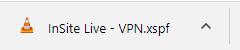
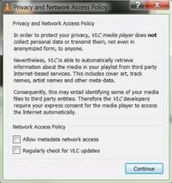
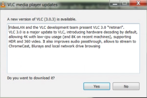

InSite Live: Follow these steps to connect to your broadcast
1. Address these special situations first:
-
In a GSA Office do not use WiFi: instead of using wireless ("WiFi") while watching, connect your computer to a docking station or network cable. If this is not possible, use Horizon VDI.
-
Using a Mac in any location: connect to a Horizon desktop (VDI) and open this page in Google chrome. In step 2, select "I am watching from a Horizon desktop (VDI)". (If you need information about using Horizon on Mac, read this InSite page: Horizon VDI on a Mac.)
-
Using Internext Explorer in any location: if you are using Internet Explorer, please go to this page: Choosing the correct InSite Live Broadcast - Internet Explorer.
2. Click the link below based on where you are watching the video:
3. If you are prompted to save, select Save.
4. Click the saved file at the bottom of your browser window. VLC media player should load on your computer.

5. Enjoy the broadcast!
Responding to other messages:
-
If a dialog with the title "Privacy and Network Access Policy" is displayed, uncheck both boxes and click "Continue".

-
If a dialog with the title "VLC Media Player Updates" is displayed, click "No".

Having Problems?
If you still have difficulty establishing a connection or viewing the video content, please contact the IT Service Desk at (866) 450-5250 or ITServiceDesk@gsa.gov.